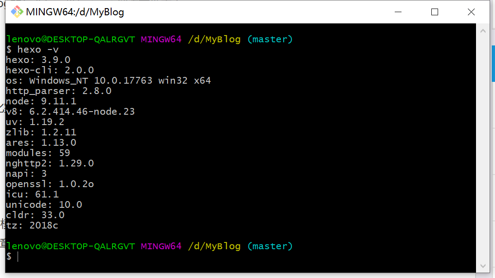

最近，韩先森即将迎来开学，于是就想利用开学之前的这段日子做些小玩意，比如搭建一个个人博客出来，心动不如行动，那就开始做吧。我之前对网站搭建也有一定的了解，但是仅限于了解，基本上和小白差不多。这不，前前后后折腾了3天的时间才将网站搭了出来，搭建过程中，也就是购买域名的时候花了点RMB，总体成本是55元（当然除去人力成本和时间成本这些哈<–>）。网站能够搭建出来也要感谢godweiyang的支持（ https://godweiyang.com ），godweiyang这篇博客已经写的很详细了，但自己在搭建过程中依然遇到这样那样的问题，所以结合自身的实际情况，来写这篇博客。所以想要拥有个人博客，并且没有任何网站搭建经验并且还想省钱的同学，那么这篇博客绝对不辜负你的期望，话不多说，我们开始挽起袖子，加油干！
一、准备工作
首先，你需要在拥有一台电脑(废话)，然后在电脑上安装:
Node.jsGithexo
除此之外，你应该还需要在GitHub上注册一个账号，如果你没有的话。
这里我就直接使用实验室配的电脑来进行搭建，操作系统是Windows 10.
1、Node.js安装
下载成功后，直接一路傻瓜式安装即可。安装完成后，打开终端（ Win+R，然后输入cmd ），输入指令:
node -v
npm -v如果出现关于node.js的版本号之后(下图)，就证明这一步已经成功了，开始下一步。
2、Git安装
下载地址：https://git-scm.com/downloads
下载成功后，安装时基本上都选择默认选项即可，有人可能问，Git这种命令行工具是不是必须安装到C盘才可以，其实是不需要的，包括上面的Node.js安装位置，这里韩先森将他们都统一安装到了我的软件盘:D盘（个人习惯）。然后你在桌面左下角搜索栏中输入Git，如果出现Git bash图标，那么恭喜你，这一步也完成了。
3、GitHub准备工作
首先需要在GitHub上申请一个账号（这一步可以直接参照官网指导），然后新建一个repository ：
（ 将 Initialize this repository with a README 这项也打上勾 ）
注意这里repository name格式一定是 username.github.io ，（username就是你github的用户名，比如韩先森的用户名是fyhaha，所以repository name就是fyhaha.github.io ）否则网站会出现404或者导致网页显示不正常。
创建完成后，打开你所创建的项目，点击setting->GitHub Pages -> change theme-->select theme,具体流程可以参照下图：
（这个模块要在settings的最下面，不是很容易找到 ）
操作完之后，我们返回GitHub Pages 发现变成了这个样子：（由于hanfeiyu.com是我已经注册的域名，所以显示这个，按照流程正常操作之后，应该是 http://github.com/username/username.github.io ）
4、hexo
从这里开始，我们就需要将Git Bash工具引上舞台了，我在D盘（是我的存储盘，因人而异哟，在其他盘建立也无碍）目录下新建了一个文件夹MyBlog，然后再MyBlog文件夹中，右击鼠标，打开git Bash，然后输入指令：
npm install -g hexo-cli这一步下载的时候可能会很慢，耐心等待一会或者使用国内镜像源来下载：
npm install -g cnpm --registry=https://registry.npm.taobao.org
cnpm install -g hexo-cli 使用 指令
hexo -v来检查hexo是否安装成功，出现下图则说明安装成功。

然后输入以下命令:
hexo init //初始化文件夹，这一步操作主要是从Github上下载hexo相关文件
npm install //下载相关组件，指令执行后，会发现所在的文件目录下多了一个node_modules的文件夹
//至此，网站在本地的配置工作也完成了，那么接下来就可以先将网页部署在本地上了
hexo g //生成静态网页文件，操作完成后，目录下又会多出一个public文件夹。这里面就是存储生成的所有静态网页文件。
hexo s //将网页文件部署到本地然后打开浏览器，输入https://localhost:4000 ，就可以看到以下激动的画面:

这就说明，你已经成功的在本地搭建了一个基于hexo的网站，但是先着急，还有更激动的事情呢……
网站光部署在本地是不够的，因为你部署在本地就能只供自己在自己的电脑上访问，那就不算做是网站。接下来我们就要将它部署到GitHub上，可以使得全球的互联网用户来访问。
到此为止，我们前期的所有工作均已准备就绪。那么接下来我们就开始正式进入搭建过程！
二、网站的搭建
1 、本地与GitHub连接
结束上文的操作后，我们需要将本地（你的电脑）与GitHub通过ssh连接起来，因为这样，你才能将本地的生成的网页静态文件，部署到GitHub服务器上。
依然在我们1.4节中所建立的D:\MyBlog文件夹中，打开Git Bash，然后输入以下指令：
git config --global user.name "FyHaHa" //"FyHaHa" 替换成你自己的GitHub用户名，不区分大小写
git config --global user.email "fyhancs@gmail.com" //"fyhancs@gmail.com" 替换成你在GitHub注册的邮箱利用Git来生成本地的ssh key
ssh-keygen -t rsa -C "fyhancs@gmail.com"如果本地上已经存在了id_rsa文件，输入y，直接替换。然后连续两个回车，便可以生成密钥文件。
cat ~/.ssh/id_rsa.pub查看密钥信息：
然后在Github中，点击头像下面的settings–>SSH and GPG keys，新建一个ssh，将密钥信息复制到框中，然后保存。
输入以下指令，如果出现你的GitHub用户名，那就证明连接成功！
ssh -T git@github.com 2、网站配置
OK ，然后我们对hexo进行环境配置。在进行环境配置之前，先让大家了解一下hexo的结构。经过以上步骤后，在D:\MyBlog\的目录中会存在以下文件夹以及文件：
node_modules: #存储的是hexo的各种组件或者第三方插件，这个文件夹中的文件一般不需要我们去修改。
public: #当在本地进行调试时，所生成的网页静态文件存储于此，这个文件夹中的文件也不需要我们去修改。
scaffolds: #这里面有post.md,draft.md,page.md这三个文件，可以将他们看成模板文件，比如post.md就是文章的模板，里面定义了文章日期、是否置顶等属性。
source: #存储文章等资源文件。
theme: #存储网站的主题模板。
_config：#网站的配置文件。我们要做的是打开_config.yml文件，对网站的属性进行配置，比如：网站名称、logo等等（可以根据个人需要来进行修改)。这里我们只针对网站部署模块进行修改：
# Deployment
## Docs: https://hexo.io/docs/deployment.html
deploy:
type: git
repository: https://github.com/username/username.github.io.git //网站的静态文件将会部署在这里，username是GitHub的用户名，记得替换
branch: master这样，就完成了网站在GitHub上的部署。
还是在Git Bash中输入
hexo clean
hexo g
hexo d //完成部署操作然后在打开浏览器，输入https://username.github.io ，你就可以看到：
3、创建第一篇博客
还是在上文一直使用的Git bash中，输入
hexo new post "my_artical"这样就在D:\MyBlog\source\_posts中创建了一个my_artical.md文件，然后用编辑器打开，你就可以随心所欲的在里面发挥你的创作才能了。创作完毕后，在打开的Git Bash中输入：
hexo clean
hexo g
hexo d //完成部署操作这样你就可以在https://username.github.io 中看到你的文章了，开心不开心，激动不激动。
到这里，个人博客基本上就搭建完毕，以后你就可以在https://username.github.io 随心所欲的发表你的文章了。
But！但是你如果想让博客用自己的个性化域名而不是用Github提供的默认域名，比如廖雪峰老师的liaoxuefeng.com这种看起来很有牌面的域名，应该怎么办呢，请接着看。
4、绑定个人域名
首先要在域名代理商那里购买域名，网上很多人说域名最好买国外的，有很多好处，不如不需要备案，便宜等等。但是我们的域名仅是用于个人博客用，再加上我们使用了GitHub的服务器，所以我个人建议，就直接在阿里云上购买即可。主要有以下几点优点：
- 因为我们只是购买了域名，而没有使用阿里云的服务器，所以不需要进行繁琐的备案。但是域名购买需要实名认证，认证之后，很快就可以直接解析使用，我从认证到购买成功再到解析成功的过程，不到一小时就完成了。当然，我也不排除我是因为巧合，因为网上依然是有人在吐槽阿里云的认证速度。
- 我对比了国内的阿里云、腾讯云、百度云，以及国外的namecheap、GoDaddy这些域名代理商，发现国内平台的域名更加便宜一些，并且付款手续简单，直接支付宝或者微信即可，国外的域名注册平台支持银联卡操作，大多不支持支付宝微信付款方式。
在阿里云购买之后，等到域名状态从serverhold变为正常后，就可以进行解析了：
解析成功后，在你的GitHub上项目中，进入settings->Github Pages，在Custom domain中填写你的专属域名，注意，我这里没有带www，这样别人就可以直接在浏览器中输入hanfeiyu.com就可以访问我的博客了，要不然，别人在访问你的时候，必须要输入<www.hanfeiyu.com> 才可以访问。然后save之后，你会在你的repository中发现多了一个CNAME的文件，然后再在D:\MyBlog\source\目录下新建一个CNAME文件（没有后缀）,在里面填写上你的专属域名hanfeiyu.com，保存。

这样，别人就可以使用你的专属域名来访问你的个人博客了。
5、添加主题
如果你认为hexo默认的主题不符合你的气质,你可以自己到hexo官网上寻找一个适合你的主题风格。这里韩先森使用的是 hexo-theme-matery主题 (https://github.com/blinkfox/hexo-theme-matery )。将主题问价下载解压之后，放在D:\MyBlog\theme目录下，然后打开D:\MyBlog\_config.yml，修改theme属性：
hero-theme-matery提供了很多个性化功能的接口，比如：响应式设计、自定义界面、文章置顶、评论等，用户如果想使用某个功能，只需要在配置文件中进行配置即可。更多的精彩功能详见：
这是我基于hero-theme-matery主题搭建的博客网站 ( https://hanfeiyu.com ) 效果展示图：
6、实现下载功能
如果我们有一份源代码，想在网站上提供下载链接，只需要以下几步即可。
这里我新建一份新的博客，命令test，使用hexo new post “test”指令后会得到一个test文件夹河test.md文件：
然后将希望下载的文件，比如说21.pdf文件，放入test文件夹下。
在test.md中，编写：
然后，编译运行之后，便可以成功！
三、多台设备同步更新网站
但是，如果我想要发布博客，或者对网站功能进行优化升级，就只能通过实验室的电脑进行操作，因为网站的环境配置文件和代码都保存在电脑本地端。如果我有事情要外出出差个两周，在出差这段时间我有好的idea想要发布在博客上，应该怎么办呢？那么接下来我就教大家如何在多台电脑上发布和维护博客。
1、代码备份到GitHub上
首先，需要在GitHub上新建一个repository ,名，命名为myblog_hexo，如果你不想让别人访问你的项目，可以设置为private：
我们接下来就将我们在本地的网站源码上传到myblog_hexo中，打开D:\MyBlog，在MyBlog目录下打开Git Bash工具，输入：
git clone https://github.com/fyhaha/myblog_hexo //将GitHub中新建的myblog_hexo下载到本地中然后你会发现在你的MyBlog文件夹中多了一个myblog_hexo的文件夹，进入myblog_hexo目录下，找到.git文件夹。有的同学可能进入myblog_hexo目录后 ，没有发现这个.git文件夹，这是因为.git文件默认是隐藏的，所以我们需要将隐藏的文件显示出来：
然后，将.git移到MyBlog文件夹目录下，在Git Bash工具中输入：
git add -A
git commit -m "xxxxx" // 引号内的xxxx可以随便写
git push执行完之后，本地的代码就会上传到GitHub新建的myblog_hexo中。接下来你就可以在另一台电脑上进行网站的运营和维护了。
2、在另一台设备上创建发布博客
这里我要在一台从来没有配置过博客环境的MacBook上进行操作示范，首先，要确保Mac上安装了Node.js hexo Git(一般Mac上都会自带Git环境)，如果没有的话，自行参照上文第一章进行安装。然后还要将Mac和GitHub连接，如同我们2.1中所介绍，将Mac的ssh key保存到GitHub中即可。
Mac生成ssh密钥方式和windows相似，打开终端，输入ssh-keygen -t rsa，一路回车到底即可。然后使用
cat ~/.ssh/id_rsa.pub 来查看密钥。将密钥信息拷贝到GitHub中保存即可（操作同2.1节）。
连接成功后，新建MyBlog文件夹，打开终端，进入你所新建的文件夹中，然后使用Git指令将你在GitHub上的myblog_hexo项目下载到本地：
cd /Users/freddy/Documents/MyBlog
git clone https://github.com/fyhaha/myblog_hexo然后进入myblog_hexo目录下，进行安装hexo必要组件，
cd myblog_hexo
npm installOK,到这里，你就可以在Mac上创建你的博客，
hexo new post "lalala"然后对它进行编辑，编辑完成后，通过hexo clean && hexo g && hexo d 将博客部署到GitHub服务器上，然后在浏览器中就可以看到你新发布的博客了。注意，当你完成之后发布之后，别忘了将你修改后的文件上传到GitHub上，
git add -A
git commit -m "xxxx"
git push 注意
如果你之前已经在某台电脑上创建发布过博客，那么再使用这台电脑进行发布博客时，就不需要再进行上述那么麻烦的同步工作了，这就得益于GitHub的强大功能了。以我实验室的电脑为例，倘若我经过上述步骤后，在Mac上成功发布了一篇博客，现在我又要用我实验室的电脑（也就是最初我用来搭建网站的电脑）来再次发布一篇博客，那么我需要在D:/MyBlog目录下使用Git Bash工具执行：
git pull //将GitHub上的代码更新到本地这样可以保证我在Mac上对网站内容所作的修改，同步更新到我本地。然后就可以按照上文所讲的步骤进行疯狂的各种操作，但别忘记了操作完之后，需要将本地修改后的网站内容上传至GitHub，确保网站的实时同步更新。
四、问题以及解决
1、使用gitalk插件实现评论
在博客文章下面添加评论模块，hexo-theme-matery模板中已经提供了gitalk接口，很方便我们直接调用。我们要在GitHub中创建一个应用：https://github.com/settings/applications/new

创建之后，会出现clienIdhe clientSecret信息：
打开D:\MyBlog\themes\hexo-theme-matery\ _config.yml，
gitalk:
enable: true
owner: FyHaHa ##GitHub 的用户名
repo: fyhaha.github.io # 前文建立的repository名称
oauth:
clientId:
clientSecret:
admin: FyHaHa ##GitHub 的用户名然后 hexo clean && hexo g && hexo d
但是，你会发现当你点击GitHub登陆时，总会跳转到博客主页，这是为什么呢？韩先森一开始也百思不得其解，最后查阅资料知道，我们在创建repository 时，勾选了Enforce HTTPS（下图）选项，所以导致每当我们点击GitHub登陆时，总是寻址都寻不到正确的网址，不得已才会回调到我们博客。
所以我们应该在GitHub创建应用时，应该将网址前缀修改为https，
这样，就可以正常登录GitHub进行评论了。
2、图片上传失败
这点是自己在做测试时发现的，在写博客的时候，有时候如果图片尺寸过大，容易造成上传不成功，这时候就需要对图像进行压缩后上传。
……
( 此部分将在另外一篇文章中持续更新！)
以上就是我搭建的全部过程，如果同学你在过程中依然存在某些问题，可以在底下评论，或者E-mail我都可以，联系方式，可以见博客的“关于”。